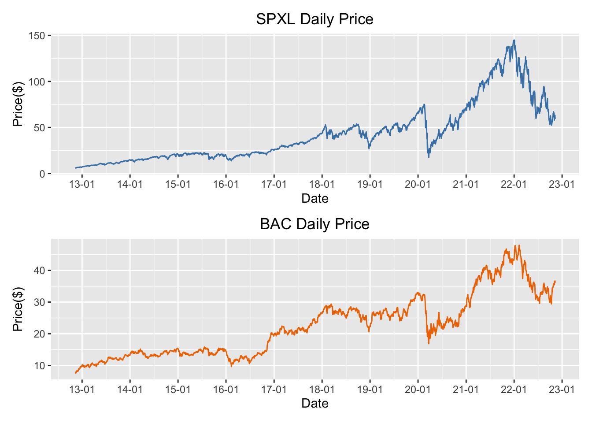
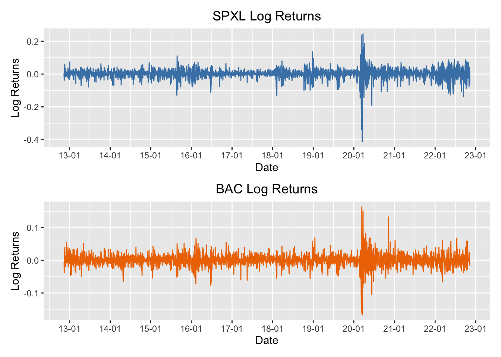
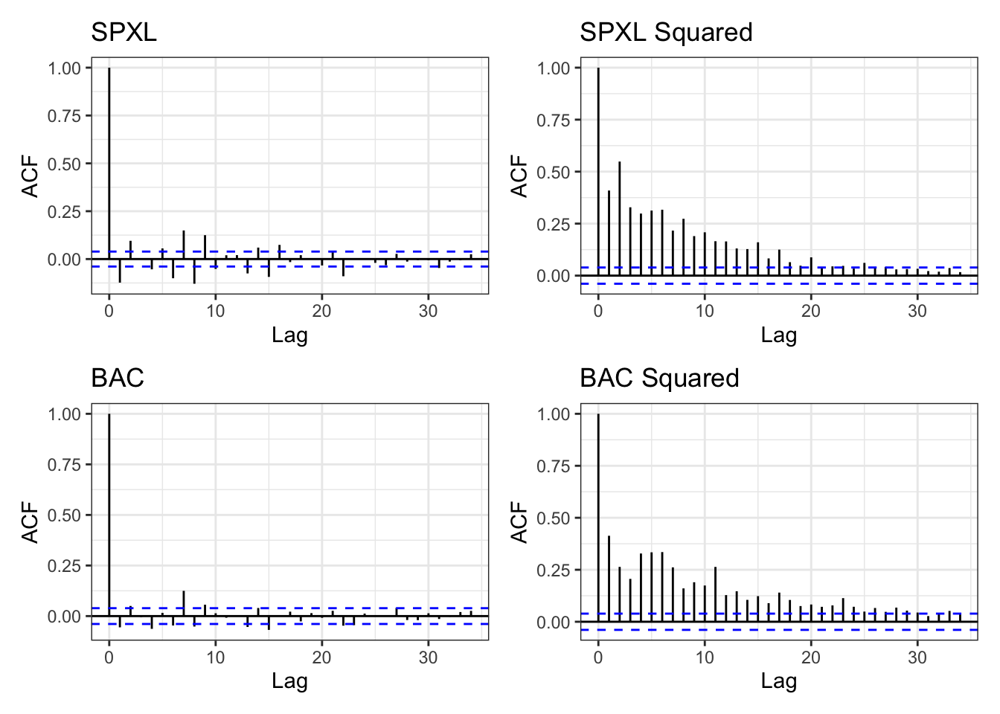
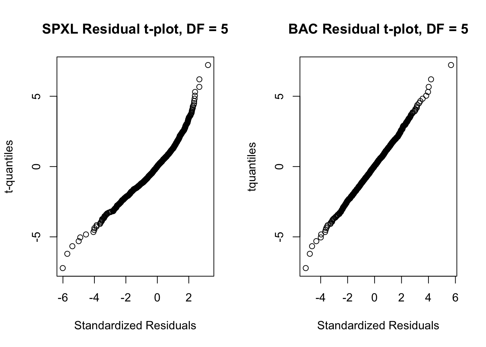
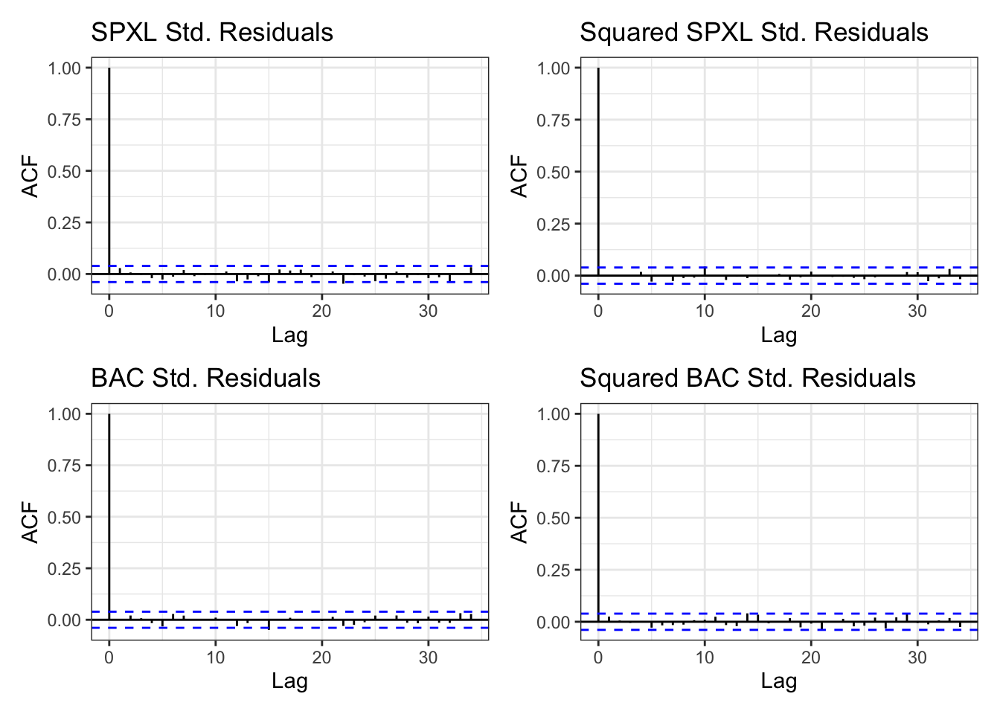

Introduction
In todays volatile world, portfolio management is crucial as it helps reduce the investment strategy risk to the extent that cannot be ignored. The goal of a portfolio manager is to reduce risks and maximize returns for their clients. The aim of this project is to analyse the Direxion Daily S&P 500 Bull 3X Shares (SPXL) ETF and Bank of America Corp (NYSE: BAC) stock and study an optimal portfolio to forecast Value-at-Risk. Direxion Daily S&P 500 Bull 3X Shares is a 300% leveraged ETF derived from the S&P 500 index and Bank of America is an evergreen stock generating steady returns. An optimum portfolio mix of these two financial assets can reduce VaR and provide handsome returns. We collect previous 10 year daily OHLC data for both the instruments from Yahoo Finance using quantmod::getSymbols() in R.
To this end, we perform the following analyses:
- Explore the data to check for time dependence and volatility clustering.
- Build a time series model, specifically, \(AR(1) + GARCH(1,1)\) to model each product’s log returns.
- Fit t-distributions to the standardized errors of both models. In order to study the dependence structure of both the residues, we fit several copulas like t - Copula, Gaussian copula, Gumbel Copula, Clayton and Frank copulas and choose the best one by minimizing AIC.
- We conduct a residual analysis on the standardized residues of the model to check for any serial correlation. Using autocorrelation plots and weighted versions of Ljung-Box test, we conclude that the \(AR(1) + GARCH(1,1)\) model is a good fit for the data.
- Lastly, we utilize numerical methods to conduct Value-at-Risk forecasting of a portfolio mix of SPXL and BAC. We find that VaR increases as SPXL’s share in the portfolio increases.
Data
We collect ten years daily OHLC data of Direxion Daily S&P 500 Bull 3X Shares (SPXL) and Bank of America Corp (NYSE: BAC). SPXL is a three times leveraged ETF mirroring the S&P 500 index. Hence, it provides a 300% of the S&P 500 index’s daily return. The data is collected from Yahoo finance for period 2012/11 - 2022/11 using the getSymbol() function from the quantmod library. The table represents the summary statistics of daily adjusted closing stock price, and log returns of both the instruments.
| vars | n | mean | sd | skew | kurtosis | se | |
| SPXL | 1 | 2,517 | 42.899 | 31.554 | 1.240 | 0.854 | 0.629 |
| BAC | 2 | 2,517 | 22.488 | 9.675 | 0.591 | -0.556 | 0.193 |
| SPXL_r | 3 | 2,517 | 0.001 | 0.033 | -1.525 | 20.383 | 0.001 |
| BAC_r | 4 | 2,517 | 0.001 | 0.019 | -0.070 | 9.849 | 0.0004 |
There are a total of 2517 observations in total. Prices and log returns of both the financial instruments are asymmetric. SPXL daily prices are extremely skewed to the right, while SPXL returns are extremely skewed to the left. Moreover, BAC daily prices are slightly skewed to the right while the returns are slightly skewed to the left. The excess kurtosis for the log returns of both assets show that returns are not normally distributed.
Time series graphs and distribution plots
Exploratory Data Analysis
Firstly, we check for weak stationarity by investigating the time series plots of log returns of both the financial instruments. Next, we conduct the Augmented Dickey Fuller (ADF) test to check for the presence of unit root.

Augmented Dickey-Fuller Test
data: daily_df$SPXL_r
Dickey-Fuller = -13.314, Lag order = 13, p-value = 0.01
alternative hypothesis: stationary
Augmented Dickey-Fuller Test
data: daily_df$BAC_r
Dickey-Fuller = -12.962, Lag order = 13, p-value = 0.01
alternative hypothesis: stationaryUpon visual inspection, it looks like both the log returns are stationary. Moreover, from the ADF test, we fail to reject the null hypothesis of non-stationarity at 1% confidence.
In order to look for time dependency and volatility clustering of log returns of SPLX and BAC, From the graphs, it is evident that both series display time varying volatility. Moreover, volatility clusters together. For better analysis, we need to model the nonconstant volatility.

From the log return graphs, it is evident that both series display time varying volatility. Moreover, ACF plots of squared series of both stocks show significant serial correlation. For better analysis, we need to model time dependence and non-constant volatility.
Time Series Model
AR(1)-GARCH(1,1) Model
In order to model autocorelation and volatility clustering, we combine an AR(1) model that has a nonconstant conditional mean but a constant conditional variance with a GARCH(1,1) model that has conditional mean and the variance of data depends on the past. Additionally, in a GARCH model, conditional standard deviation exhibits more persistent periods of low and high volatility.
The \(AR(1) - GARCH(1,1)\) is model is as follows:
\[ X_t = \mu + \phi X_{t-1} + e_t, \quad e_t = \sigma_{t}\varepsilon_{t}, \quad \sigma^2_t = \omega + \alpha e^2_{t-1} + \beta \sigma^2_{t-1} \] \[ \tilde X_t = \tilde \mu + \tilde \phi \tilde X_{t-1} + \tilde e_t, \quad \tilde e_t = \tilde \sigma_{t}\tilde \varepsilon_{t}, \quad \tilde \sigma^2_t = \tilde \omega + \tilde \alpha \tilde e^2_{t-1} + \tilde \beta \tilde \sigma^2_{t-1} \] where, \(X_t\) is the daily log returns of SPXL and \(\tilde X_t\) is the daily log returns of BAC.
spxl <- as.vector(daily_df$SPXL_r)
bac <- as.vector(daily_df$BAC_r)
# Fitting an AR(1) + GARCH(1,1) Model
spxl_spec <- ugarchspec(mean.model=list(armaOrder=c(1,0)),
variance.model=list(garchOrder=c(1,1)))
spxl_fit <- ugarchfit(spxl_spec, data = spxl)
bac_spec <- ugarchspec(mean.model=list(armaOrder=c(1,0)),
variance.model=list(garchOrder=c(1,1)))
bac_fit <- ugarchfit(bac_spec, data = bac)Residual Copula Modelling
In order to work with a portfolio of Direxion Daily S&P 500 Bull 3X Shares (SPXL) and Bank of America Corp (BAC), we need to model both the series as a copula to extract the dependence structure between the two financial instruments. In the project, we particulary study the dependent structure of the standardized residuals of an \(AR(1) - GARCH(1,1)\) model fitted to both the series.
First, we fit a Student t distribution to both \(\varepsilon_t\) and \(\tilde \varepsilon_t\) using the fitdistr() function from the MASS library.

A t-distribution with df = 5 fits well to the SPXL and BAC residuals. The qqplot for both the instruments is a straight line except for a few outliers. Given that the total number of observations (n = 2517) is high enough, the outliers are a small fraction of the sample.
Second, we transform the residuals into marginal t - distributions and fit t-copula, Gaussian copula, Gumbel Copula, Clayton and Frank copulas. We select the best fit copula by minimizing AIC. We select t-copula as it minimizes AIC.
# Fit t-Copula
Ct <- fitCopula(copula = tCopula(dim = 2), data = U_hat,
method = "ml", start = c(omega, 10))
# Log-Likelihood
log_lik_t <- loglikCopula(param = Ct@estimate, u = U_hat,
copula = tCopula(dim = 2))
aic_t <- (2 * length(Ct@estimate)) - (2 * abs(log_lik_t))
aic_t[1] -1516.139# Gaussian Copula
Cgauss <- fitCopula(copula = normalCopula(dim = 2), data = U_hat,
method = "ml", start=c(omega))
log_lik_gauss <- loglikCopula(param = Cgauss@estimate, u = U_hat,
copula = normalCopula(dim = 2))
aic_gauss <- (2 * length(Cgauss@estimate)) - (2 *abs(log_lik_gauss))
aic_gauss[1] -1411.647# Gumbel Copula
C_gumbel <- fitCopula(copula = gumbelCopula(dim = 2), data =U_hat,
method = "ml")
log_lik_gumbel <- loglikCopula(param = C_gumbel@estimate, u = U_hat,
copula = gumbelCopula(dim = 2))
aic_gumbel <- (2 * length(C_gumbel@estimate)) -(2*abs(log_lik_gumbel))
aic_gumbel[1] -1388.313# Clayton Copula
C_clayton <- fitCopula(copula = claytonCopula(dim = 2), data = U_hat,
method = "ml")
log_lik_clayton <- loglikCopula(param = C_clayton@estimate, u = U_hat,
copula = claytonCopula(dim = 2))
aic_clayton <- (2 * length(C_clayton@estimate)) -(2*abs(log_lik_clayton))
aic_clayton[1] -1213.367# Frank Copula
Cfrank <- fitCopula(copula = frankCopula(1, dim = 2), data = U_hat,
method = "ml")
log_lik_frank <- loglikCopula(param = Cfrank@estimate, u = U_hat,
copula = frankCopula(dim = 2))
aic_frank <- (2 * length(Cfrank@estimate)) - (2 *abs(log_lik_frank))
aic_frank[1] -1395.35Residual Analysis
We conduct a residual analysis on the standardized residuals \(\varepsilon_t\) and \(\tilde \varepsilon\) to check the fit of the \(AR(1) + GARCH(1,1)\) model.
First, we inspect the standardized residuals and squared standardized residuals for autocorrelation. The figure below plots the acf() function for the four series.

The AR(1) + GARCH(1,1) model fits very well to SPXL and BAC. The standardized residuals and the squared standardized residuals of both the models show no significant serial correlation at 95% confidence.
Next we look at the following box tests to check autocorrelation
*---------------------------------*
* GARCH Model Fit *
*---------------------------------*
Conditional Variance Dynamics
-----------------------------------
GARCH Model : sGARCH(1,1)
Mean Model : ARFIMA(1,0,0)
Distribution : norm
Optimal Parameters
------------------------------------
Estimate Std. Error t value Pr(>|t|)
mu 0.002425 0.000386 6.2772 0.000000
ar1 -0.057589 0.022519 -2.5574 0.010546
omega 0.000039 0.000005 7.2771 0.000000
alpha1 0.234802 0.023531 9.9784 0.000000
beta1 0.735776 0.021292 34.5560 0.000000
Robust Standard Errors:
Estimate Std. Error t value Pr(>|t|)
mu 0.002425 0.000393 6.1642 0.000000
ar1 -0.057589 0.020538 -2.8040 0.005047
omega 0.000039 0.000008 4.7664 0.000002
alpha1 0.234802 0.035228 6.6651 0.000000
beta1 0.735776 0.030381 24.2180 0.000000
LogLikelihood : 5725.413
Information Criteria
------------------------------------
Akaike -4.5454
Bayes -4.5338
Shibata -4.5454
Hannan-Quinn -4.5412
Weighted Ljung-Box Test on Standardized Residuals
------------------------------------
statistic p-value
Lag[1] 2.049 0.1523
Lag[2*(p+q)+(p+q)-1][2] 2.124 0.1746
Lag[4*(p+q)+(p+q)-1][5] 2.964 0.4404
d.o.f=1
H0 : No serial correlation
Weighted Ljung-Box Test on Standardized Squared Residuals
------------------------------------
statistic p-value
Lag[1] 0.00449 0.9466
Lag[2*(p+q)+(p+q)-1][5] 0.75536 0.9121
Lag[4*(p+q)+(p+q)-1][9] 2.39145 0.8535
d.o.f=2
Weighted ARCH LM Tests
------------------------------------
Statistic Shape Scale P-Value
ARCH Lag[3] 0.0006994 0.500 2.000 0.9789
ARCH Lag[5] 1.8924772 1.440 1.667 0.4955
ARCH Lag[7] 2.9168559 2.315 1.543 0.5294
Nyblom stability test
------------------------------------
Joint Statistic: 1.4922
Individual Statistics:
mu 0.06813
ar1 0.03829
omega 0.25543
alpha1 0.74932
beta1 0.80370
Asymptotic Critical Values (10% 5% 1%)
Joint Statistic: 1.28 1.47 1.88
Individual Statistic: 0.35 0.47 0.75
Sign Bias Test
------------------------------------
t-value prob sig
Sign Bias 3.751292 0.0001799 ***
Negative Sign Bias 0.946948 0.3437561
Positive Sign Bias 0.004954 0.9960476
Joint Effect 20.723582 0.0001201 ***
Adjusted Pearson Goodness-of-Fit Test:
------------------------------------
group statistic p-value(g-1)
1 20 132.0 6.129e-19
2 30 157.1 1.510e-19
3 40 178.8 8.634e-20
4 50 187.7 4.062e-18
Elapsed time : 0.3075819
*---------------------------------*
* GARCH Model Fit *
*---------------------------------*
Conditional Variance Dynamics
-----------------------------------
GARCH Model : sGARCH(1,1)
Mean Model : ARFIMA(1,0,0)
Distribution : norm
Optimal Parameters
------------------------------------
Estimate Std. Error t value Pr(>|t|)
mu 0.001034 0.000323 3.2023 0.001363
ar1 0.032520 0.021631 1.5034 0.132731
omega 0.000018 0.000004 4.2020 0.000026
alpha1 0.105469 0.015992 6.5953 0.000000
beta1 0.837323 0.026364 31.7607 0.000000
Robust Standard Errors:
Estimate Std. Error t value Pr(>|t|)
mu 0.001034 0.000313 3.3035 0.000955
ar1 0.032520 0.020844 1.5602 0.118709
omega 0.000018 0.000007 2.5283 0.011462
alpha1 0.105469 0.033066 3.1896 0.001425
beta1 0.837323 0.048064 17.4210 0.000000
LogLikelihood : 6693.438
Information Criteria
------------------------------------
Akaike -5.3146
Bayes -5.3030
Shibata -5.3146
Hannan-Quinn -5.3104
Weighted Ljung-Box Test on Standardized Residuals
------------------------------------
statistic p-value
Lag[1] 0.02462 0.8753
Lag[2*(p+q)+(p+q)-1][2] 0.56004 0.9483
Lag[4*(p+q)+(p+q)-1][5] 1.75862 0.7794
d.o.f=1
H0 : No serial correlation
Weighted Ljung-Box Test on Standardized Squared Residuals
------------------------------------
statistic p-value
Lag[1] 1.550 0.2131
Lag[2*(p+q)+(p+q)-1][5] 2.058 0.6047
Lag[4*(p+q)+(p+q)-1][9] 3.474 0.6789
d.o.f=2
Weighted ARCH LM Tests
------------------------------------
Statistic Shape Scale P-Value
ARCH Lag[3] 0.06871 0.500 2.000 0.7932
ARCH Lag[5] 1.27764 1.440 1.667 0.6527
ARCH Lag[7] 2.21876 2.315 1.543 0.6710
Nyblom stability test
------------------------------------
Joint Statistic: 0.8988
Individual Statistics:
mu 0.02392
ar1 0.02143
omega 0.24815
alpha1 0.57061
beta1 0.34991
Asymptotic Critical Values (10% 5% 1%)
Joint Statistic: 1.28 1.47 1.88
Individual Statistic: 0.35 0.47 0.75
Sign Bias Test
------------------------------------
t-value prob sig
Sign Bias 0.3416 0.7327015
Negative Sign Bias 3.0886 0.0020333 ***
Positive Sign Bias 0.5373 0.5910849
Joint Effect 17.9995 0.0004399 ***
Adjusted Pearson Goodness-of-Fit Test:
------------------------------------
group statistic p-value(g-1)
1 20 77.00 6.080e-09
2 30 89.57 4.243e-08
3 40 105.92 4.275e-08
4 50 114.09 4.159e-07
Elapsed time : 0.438179 The weighted versions of the Ljung-Box test and their p-values all indicate that the estimated \(AR(1) + GARCH(1,1)\) model for the conditional mean and variance is adequate for removing serial correlation from the series and squared series.
Applications to Portfolio Risk Management
In this section, we apply the \(AR(1) + GARCH(1,1)\) along with t-Copula residuals to forecast one-step ahead Value-at-Risk at 99% level on the following portfolio consisting of SPXL and BAC with weight \(\rho\):
\[\rho X_{n + 1} + (1-\rho) \tilde X_{n+1}\]
where, \(\rho = \{0.1, 0.2, 0.3, 0.4, 0.5, 0.6, 0.7, 0.8, 0.9\}\)
To forecast VaR, we solve the following equation:
\[0.99 = P(\rho X_{n + 1} + (1-\rho) \tilde X_{n+1} \leq x | \mathcal{F})\] \[0.99 = P(\rho(\mu + \phi X_{n} + \sigma_{n+1}\varepsilon_{n+1}) + (1-\rho) (\tilde\mu + \tilde\phi \tilde X_{n} + \tilde \sigma_{n+1} \tilde \varepsilon_{n+1}) \leq x | \mathcal{F})\]
Initially, we forecast one step ahead \(\sigma_{n+1}\) and \(\tilde \sigma_{n + 1}\) using the ugarchforecast() function. At this point, we have estimated all the unknowns in the \(AR(1) + GARCH(1,1)\) model. In order to solve the above equation numerically, we draw a random sample of size \(b = 10000\) from the fitted t-Copula and make transformations to get \(\varepsilon_i\) and \(\tilde \varepsilon_i\), \(i = 1, \dots, b\) Lastly, we calculate VaR at 99% by calculating the 99th quantile of the following sample
\[\big{\{}\rho(\mu + \phi X_{n} + \sigma_{n+1}\varepsilon_{i}) + (1-\rho) (\tilde\mu + \tilde\phi \tilde X_{n} + \tilde \sigma_{n+1} \tilde \varepsilon_{i})\big{\}}_{i = 1}^b\] In order to see how risk depends on share of portfolio \(\rho\), we conduct the empirical activity for \(\rho = 0.1, \dots, 0.9\).
# Copula Simulation
b <- 10000
rho = Ct@estimate[1]
df = Ct@estimate[2]
simulate <- rCopula(b, tCopula(dim = 2, rho, df = df))
spxl_marginal <- qt(simulate[, 1], df = spxl_res_t$estimate[3])
bac_marginal <- qt(simulate[, 2], df = bac_res_t$estimate[3])
# dataframe with transformed marginals
sim <- cbind(spxl_marginal, bac_marginal)
# Forecasting sigmas
spxl_pred <- ugarchforecast(spxl_fit, n.ahead = 1)
bac_pred <- ugarchforecast(bac_fit, n.ahead = 1)
spxl_sigma <- sigma(spxl_pred) # sigma_{t + 1}
bac_sigma <- sigma(bac_pred) # sigma_{t + 1}
# Vectorize parameters
s_mu <- rep(as.numeric(spxl_fit@fit$coef[1]), b)
s_ar <- rep(as.numeric(spxl_fit@fit$coef[2]), b)
s_last <- rep(spxl[length(spxl)], b)
s_sd <- rep(spxl_sigma, b)
b_mu <- rep(as.numeric(bac_fit@fit$coef[1]), b)
b_ar <- rep(as.numeric(bac_fit@fit$coef[2]), b)
b_last <- rep(bac[length(bac)], b)
b_sd <- rep(bac_sigma, b)
s <- s_mu + (s_ar * s_last) + (s_sd * sim[, 1])
ba <- b_mu + (b_ar * b_last) + (b_sd * sim[, 2])
pred_sample <- cbind(s, ba)
rhos <- seq(0.1, 0.9, by = 0.1)
var_sample <- data.frame()
alpha <- 0.01 # 99th percentile
portfolio_value <- 1000000
for (i in rhos){
s_rho <- s * rep(i, b)
b_rho <- ba * rep(1 - i, b)
sample <- s_rho + b_rho
q <- as.numeric(quantile(sample, alpha))
VaR <- - portfolio_value * q
var_sample <- rbind(var_sample, VaR)
}
colnames(var_sample) <- c("VaR ($)")
row.names(var_sample) <- c("p = 0.1", "p = 0.2", "p = 0.3", "p = 0.4",
"p = 0.5", "p = 0.6", "p = 0.7", "p = 0.8",
"p = 0.9")
var_sample VaR ($)
p = 0.1 56868.64
p = 0.2 64760.15
p = 0.3 71810.30
p = 0.4 80322.54
p = 0.5 89308.00
p = 0.6 98992.82
p = 0.7 108932.23
p = 0.8 118802.90
p = 0.9 128930.28The table reports the Value-at-Risk at 99% level for a portfolio value of $1,000,000. It is evident from the table that as SPXL’s proportion in the portfolio increases (\(\rho\)), the Value-at-Risk increases. These results are in line with expectations as Direxion Daily S&P 500 Bull 3X Shares is a 300% leveraged instrument based on the S&P 500 index. When \(\rho = 0.2\), there is a 1% percent chance that the loss would be greater than 6.4760151^{4} the next day on a $1,000,000 investment. Similarly, When \(\rho = 0.9\), there is a 1% percent chance that the loss would be greater than 1.2893028^{5} the next day on a $1,000,000 investment.
Appendix
R code:
# Importing Packages
library(quantmod)
library(xts)
library(gridExtra)
library(MASS)
library(fGarch)
library(sn)
library(copula)
library(ks)
library(stargazer)
library(patchwork)
library(rugarch)
library(psych)
library(ggplot2)
library(tseries)
# Assigning Date
start <- as.Date("2012-11-09")
end <- as.Date("2022-11-10")
spxl_df <- getSymbols("SPXL", from = start, to = end, src = "yahoo",
auto.assign = F)
bac_df <- getSymbols("BAC", from = start, to = end, src = "yahoo",
auto.assign = F)
daily_df <- cbind(spxl_df$SPXL.Adjusted, bac_df$BAC.Adjusted)
colnames(daily_df) <- c("SPXL", "BAC")
daily_df$SPXL_r <- diff(log(daily_df$SPXL))
daily_df$BAC_r <- diff(log(daily_df$BAC))
daily_df <- na.omit(daily_df)
stargazer(describe(daily_df, ranges = F), summary = F, type = "html", title = "Table 1. Summary Statistics")
plot1 <- ggplot(spxl_df, aes(x = Index, y = SPXL.Adjusted))+
geom_line(color = "steelblue") +
ggtitle("SPXL Daily Price") +
xlab("Date") +
ylab("Price($)") +
theme(plot.title = element_text(hjust = 0.5)) +
scale_x_date(date_labels = "%y-%m", date_breaks = "1 year")
plot2 <- ggplot(bac_df, aes(x = Index, y = BAC.Adjusted))+
geom_line(color = "darkorange2") +
ggtitle("BAC Daily Price") +
xlab("Date") +
ylab("Price($)") +
theme(plot.title = element_text(hjust = 0.5)) +
scale_x_date(date_labels = "%y-%m", date_breaks = "1 year")
plot1 / plot2
# Plotting log returns
plot_spxl_r <- ggplot(daily_df, aes(x = Index, y = SPXL_r))+
geom_line(color = "steelblue") +
ggtitle("SPXL Log Returns") +
xlab("Date") +
ylab("Log Returns") +
theme(plot.title = element_text(hjust = 0.5)) +
scale_x_date(date_labels = "%y-%m", date_breaks = "1 year")
plot_bac_r <- ggplot(daily_df, aes(x = Index, y = BAC_r))+
geom_line(color = "darkorange2") +
ggtitle("BAC Log Returns") +
xlab("Date") +
ylab("Log Returns") +
theme(plot.title = element_text(hjust = 0.5)) +
scale_x_date(date_labels = "%y-%m", date_breaks = "1 year")
plot_spxl_r / plot_bac_r
adf.test(daily_df$SPXL_r)
adf.test(daily_df$BAC_r)
# ACF plots
ggacf <- function(x, ci=0.95, type="correlation", xlab="Lag", ylab=NULL,
ylim=NULL, main=NULL, ci.col="blue", lag.max=NULL) {
x <- as.data.frame(x)
x.acf <- acf(x, plot=F, lag.max=lag.max, type=type)
ci.line <- qnorm((1 - ci) / 2) / sqrt(x.acf$n.used)
d.acf <- data.frame(lag=x.acf$lag, acf=x.acf$acf)
g <- ggplot(d.acf, aes(x=lag, y=acf)) +
geom_hline(yintercept=0) +
geom_segment(aes(xend=lag, yend=0)) +
geom_hline(yintercept=ci.line, color=ci.col, linetype="dashed") +
geom_hline(yintercept=-ci.line, color=ci.col, linetype="dashed") +
theme_bw() +
xlab("Lag") +
ggtitle(ifelse(is.null(main), "", main)) +
if (is.null(ylab))
ylab(ifelse(type=="partial", "PACF", "ACF"))
else
ylab(ylab)
g
}
spxl_acf <- ggacf(daily_df$SPXL_r, main = "SPXL")
spxl_acf2 <- ggacf(daily_df$SPXL_r ** 2, main = "SPXL Squared")
bac_acf <- ggacf(daily_df$BAC_r, main = "BAC")
bac_acf2 <- ggacf(daily_df$BAC_r ** 2, main = "BAC Squared")
(spxl_acf + spxl_acf2) / (bac_acf + bac_acf2)
spxl <- as.vector(daily_df$SPXL_r)
bac <- as.vector(daily_df$BAC_r)
# Fitting an AR(1) + GARCH(1,1) Model
spxl_spec <- ugarchspec(mean.model=list(armaOrder=c(1,0)),
variance.model=list(garchOrder=c(1,1)))
spxl_fit <- ugarchfit(spxl_spec, data = spxl)
bac_spec <- ugarchspec(mean.model=list(armaOrder=c(1,0)),
variance.model=list(garchOrder=c(1,1)))
bac_fit <- ugarchfit(bac_spec, data = bac)
# Standardized Residuals
spxl_res <- as.vector(residuals(spxl_fit, standardize = T))
bac_res <- as.vector(residuals(bac_fit, standardize = T))
# Fitting t-distribution
spxl_res_t <- fitdistr(spxl_res, "t")
bac_res_t <- fitdistr(bac_res, "t")
# Fitting t-density plots
par(mfrow = c(1,2))
n <- length(spxl_res)
x1 <- qt((1:n)/(n+1), df = 5)
x2 <- qt((1:n)/(n+1), df = 5)
qqplot(sort(spxl_res), x1, xlab="Standardized Residuals",
ylab="t-quantiles",
main = "SPXL Residual t-plot, DF = 5")
qqplot(sort(bac_res), x2, xlab="Standardized Residuals",
ylab="tquantiles",
main = "BAC Residual t-plot, DF = 5")
# Transform residues into uniform distribution
spxl_uniform <- pt(spxl_res, df = spxl_res_t$estimate[3])
bac_uniform <- pt(bac_res, df = bac_res_t$estimate[3])
U_hat <- cbind(spxl_uniform, bac_uniform)
colnames(U_hat) <- c("SPXL_U", "BAC_U")
tau <- as.numeric(cor.test(spxl_uniform, bac_uniform,
method="kendall")$estimate)
omega <- sin(tau * pi/2)
# Fit t-Copula
Ct <- fitCopula(copula = tCopula(dim = 2), data = U_hat,
method = "ml", start = c(omega, 10))
# Log-Likelihood
log_lik_t <- loglikCopula(param = Ct@estimate, u = U_hat,
copula = tCopula(dim = 2))
aic_t <- (2 * length(Ct@estimate)) - (2 * abs(log_lik_t))
aic_t
# Gaussian Copula
Cgauss <- fitCopula(copula = normalCopula(dim = 2), data = U_hat,
method = "ml", start=c(omega))
log_lik_gauss <- loglikCopula(param = Cgauss@estimate, u = U_hat,
copula = normalCopula(dim = 2))
aic_gauss <- (2 * length(Cgauss@estimate)) - (2 *abs(log_lik_gauss))
aic_gauss
# Gumbel Copula
C_gumbel <- fitCopula(copula = gumbelCopula(dim = 2), data =U_hat,
method = "ml")
log_lik_gumbel <- loglikCopula(param = C_gumbel@estimate, u = U_hat,
copula = gumbelCopula(dim = 2))
aic_gumbel <- (2 * length(C_gumbel@estimate)) -(2*abs(log_lik_gumbel))
aic_gumbel
# Clayton Copula
C_clayton <- fitCopula(copula = claytonCopula(dim = 2), data = U_hat,
method = "ml")
log_lik_clayton <- loglikCopula(param = C_clayton@estimate, u = U_hat,
copula = claytonCopula(dim = 2))
aic_clayton <- (2 * length(C_clayton@estimate)) -(2*abs(log_lik_clayton))
aic_clayton
# Frank Copula
Cfrank <- fitCopula(copula = frankCopula(1, dim = 2), data = U_hat,
method = "ml")
log_lik_frank <- loglikCopula(param = Cfrank@estimate, u = U_hat,
copula = frankCopula(dim = 2))
aic_frank <- (2 * length(Cfrank@estimate)) - (2 *abs(log_lik_frank))
aic_frank
spxl_res_acf <- ggacf(spxl_res, main = "SPXL Std. Residuals")
spxl_res_acf2 <- ggacf(spxl_res ** 2, main = "Squared SPXL Std. Residuals")
bac_res_acf <- ggacf(bac_res, main = "BAC Std. Residuals")
bac_res_acf2 <- ggacf(bac_res ** 2, main = "Squared BAC Std. Residuals")
(spxl_res_acf + spxl_res_acf2) / (bac_res_acf + bac_res_acf2)
show(spxl_fit)
show(bac_fit)
# Copula Simulation
b <- 10000
rho = Ct@estimate[1]
df = Ct@estimate[2]
simulate <- rCopula(b, tCopula(dim = 2, rho, df = df))
spxl_marginal <- qt(simulate[, 1], df = spxl_res_t$estimate[3])
bac_marginal <- qt(simulate[, 2], df = bac_res_t$estimate[3])
# dataframe with transformed marginals
sim <- cbind(spxl_marginal, bac_marginal)
# Forecasting sigmas
spxl_pred <- ugarchforecast(spxl_fit, n.ahead = 1)
bac_pred <- ugarchforecast(bac_fit, n.ahead = 1)
spxl_sigma <- sigma(spxl_pred) # sigma_{t + 1}
bac_sigma <- sigma(bac_pred) # sigma_{t + 1}
# Vectorize parameters
s_mu <- rep(as.numeric(spxl_fit@fit$coef[1]), b)
s_ar <- rep(as.numeric(spxl_fit@fit$coef[2]), b)
s_last <- rep(spxl[length(spxl)], b)
s_sd <- rep(spxl_sigma, b)
b_mu <- rep(as.numeric(bac_fit@fit$coef[1]), b)
b_ar <- rep(as.numeric(bac_fit@fit$coef[2]), b)
b_last <- rep(bac[length(bac)], b)
b_sd <- rep(bac_sigma, b)
s <- s_mu + (s_ar * s_last) + (s_sd * sim[, 1])
ba <- b_mu + (b_ar * b_last) + (b_sd * sim[, 2])
pred_sample <- cbind(s, ba)
rhos <- seq(0.1, 0.9, by = 0.1)
var_sample <- data.frame()
alpha <- 0.01 # 99th percentile
portfolio_value <- 1000000
for (i in rhos){
s_rho <- s * rep(i, b)
b_rho <- ba * rep(1 - i, b)
sample <- s_rho + b_rho
q <- as.numeric(quantile(sample, alpha))
VaR <- - portfolio_value * q
var_sample <- rbind(var_sample, VaR)
}
colnames(var_sample) <- c("VaR ($)")
row.names(var_sample) <- c("p = 0.1", "p = 0.2", "p = 0.3", "p = 0.4",
"p = 0.5", "p = 0.6", "p = 0.7", "p = 0.8",
"p = 0.9")
var_sample